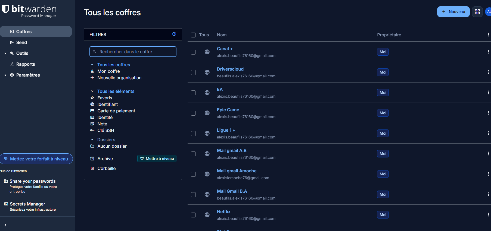
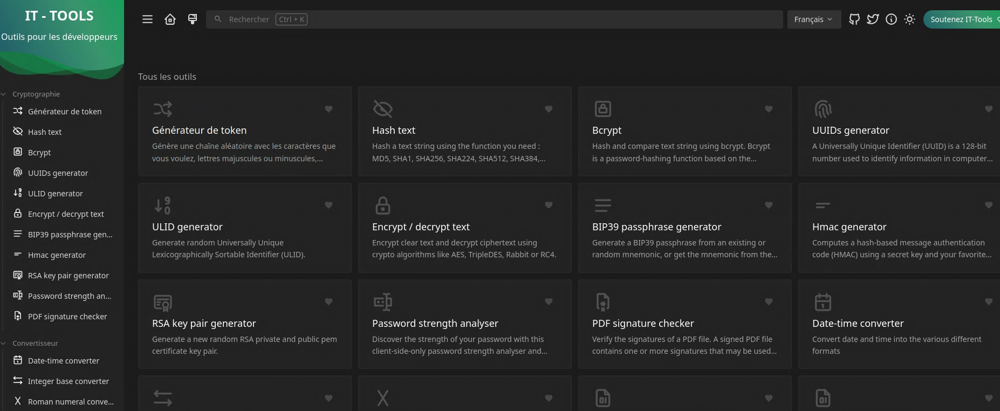

Construire un homelab multiservice avec Docker Compose et centraliser les services dans un environnement clair et exploitable.

TP Docker Compose - Homelab
Projet d'école autour de la création d'un homelab multiservice avec Docker Compose, dashboards, outils IT, supervision, gestion de mots de passe et services auto-hébergés.
Contexte
Ce projet d'école avait pour objectif de créer un homelab personnalisé avec Docker Compose. L'idée était de regrouper plusieurs services utiles dans un environnement Linux, avec une interface de gestion, des outils d'administration, des services de sécurité et des solutions de supervision.
Le fichier docker-compose.yml permet de déclarer les conteneurs, les ports, les volumes persistants et le réseau commun homelab. Le TP demande aussi de justifier les choix techniques autour de l'originalité, de la sécurité et des performances.
Rédiger le fichier Compose, choisir les services, configurer les ports, volumes et réseaux, puis vérifier l'accès aux applications.
Un homelab fonctionnel regroupant des outils de dashboard, sécurité, supervision, documentation, proxy, sauvegarde et administration.
Projet d'école autour de Docker Compose et de l'auto-hébergement.
2 jours
Estimation fictive de 168,28 EUR bruts en temps humain (1 personne x 2 jours x 7 h x 12,02 EUR), réalisée dans le cadre pédagogique avec des images Docker majoritairement open source.
22 avril 2026
23 avril 2026
Travail réalisé
- Création d'un fichier
docker-compose.ymlpour orchestrer les services du homelab. - Mise en place d'un réseau Docker commun nommé
homelab. - Configuration des ports d'accès pour chaque application.
- Ajout de volumes persistants pour conserver les données des services.
- Intégration de services comme Vaultwarden, IT-Tools, Wiki.js, Portainer, Pi-hole et Uptime Kuma.
- Ajout de Nginx Proxy Manager pour préparer la gestion des accès web.
- Vérification de l'accès aux interfaces web et du bon démarrage des conteneurs.
- Préparation d'une présentation des choix techniques du homelab.
Services intégrés
- Dashy / Homepage : interfaces de centralisation des services.
- IT-Tools : boîte à outils web pour l'administration et les tests.
- Vaultwarden : gestionnaire de mots de passe auto-hébergé.
- Wiki.js : documentation interne avec base PostgreSQL.
- Code-server : environnement de développement accessible depuis le navigateur.
- Uptime Kuma : supervision de disponibilité des services.
- Nginx Proxy Manager : reverse proxy et préparation des accès HTTPS.
- Portainer : administration des conteneurs Docker.
- Pi-hole : filtrage DNS et blocage de domaines indésirables.
- Duplicati / Open WebUI : sauvegarde et expérimentation autour de services web.
Difficultés et points d'attention
- Éviter les conflits de ports entre les différents services exposés.
- Organiser proprement les volumes pour conserver les données importantes.
- Choisir des services utiles sans surcharger inutilement le homelab.
- Penser à la sécurité des accès, notamment pour les services sensibles comme Vaultwarden.
- Documenter les choix techniques pour pouvoir les présenter et les justifier.
Captures du homelab
Voir le fichier docker-compose.yml
services:
dashy:
image: lissy93/dashy
container_name: dashy
ports:
- "8080:8080"
environment:
- NODE_ENV=production
restart: unless-stopped
healthcheck:
test: ['CMD', 'node', '/app/services/healthcheck']
interval: 1m30s
timeout: 10s
retries: 3
start_period: 40s
networks:
- homelab
homepage:
image: ghcr.io/gethomepage/homepage:latest
container_name: homepage
restart: unless-stopped
ports:
- "3005:3000"
volumes:
- ./homepage:/app/config
- /var/run/docker.sock:/var/run/docker.sock
environment:
- PUID=0
- PGID=0
networks:
- homelab
it-tools:
image: ghcr.io/corentinth/it-tools:latest
container_name: it-tools
ports:
- "8081:80"
restart: unless-stopped
networks:
- homelab
bentopdf:
image: bentopdfteam/bentopdf-simple:latest
container_name: bentopdf
restart: unless-stopped
ports:
- "8082:8080"
environment:
- DISABLE_IPV6=true
networks:
- homelab
uptime-kuma:
image: louislam/uptime-kuma:2
container_name: uptime-kuma
restart: always
ports:
- "3001:3001"
volumes:
- ./uptime-kuma:/app/data
networks:
- homelab
vaultwarden:
image: vaultwarden/server:latest
container_name: vaultwarden
restart: unless-stopped
ports:
- "8083:80"
volumes:
- ./vaultwarden:/data
environment:
- WEBSOCKET_ENABLED=true
networks:
- homelab
db:
image: postgres:15-alpine
restart: unless-stopped
environment:
POSTGRES_DB: wiki
POSTGRES_PASSWORD: wikijsrocks
POSTGRES_USER: wikijs
logging:
driver: none
volumes:
- db-data:/var/lib/postgresql/data
networks:
- homelab
wiki:
image: ghcr.io/requarks/wiki:2
restart: unless-stopped
depends_on:
- db
ports:
- "8084:3000"
environment:
DB_TYPE: postgres
DB_HOST: db
DB_PORT: 5432
DB_USER: wikijs
DB_PASS: wikijsrocks
DB_NAME: wiki
networks:
- homelab
code-server:
image: codercom/code-server:4.16.1-ubuntu
container_name: code-server
restart: unless-stopped
ports:
- "8085:8080"
environment:
- DOCKER_USER=coder
- PASSWORD=Password
volumes:
- ./config:/config
- ./:/home/coder/workspace
networks:
- homelab
open-webui:
image: ghcr.io/open-webui/open-webui:main
container_name: open-webui
restart: unless-stopped
ports:
- "3000:8080"
environment:
- OLLAMA_BASE_URL=http://host.docker.internal:11434
- WEBUI_AUTH=false
extra_hosts:
- "host.docker.internal:host-gateway"
volumes:
- open-webui:/app/backend/data
networks:
- homelab
nginx-proxy-manager:
image: jc21/nginx-proxy-manager:latest
container_name: npm
restart: unless-stopped
ports:
- "80:80"
- "81:81"
- "443:443"
volumes:
- ./npm/data:/data
- ./npm/letsencrypt:/etc/letsencrypt
- /root/ssl:/ssl
networks:
- homelab
portainer:
image: portainer/portainer-ce:latest
container_name: portainer
restart: unless-stopped
ports:
- "9000:9000"
volumes:
- /var/run/docker.sock:/var/run/docker.sock
- ./portainer:/data
networks:
- homelab
pihole:
image: pihole/pihole:latest
container_name: pihole
restart: unless-stopped
ports:
- "53:53/tcp"
- "53:53/udp"
- "8086:80"
environment:
- TZ=Europe/Paris
- WEBPASSWORD=motdepassefort
volumes:
- ./pihole/etc-pihole:/etc/pihole
- ./pihole/etc-dnsmasq.d:/etc/dnsmasq.d
networks:
- homelab
duplicati:
image: duplicati/duplicati:latest
container_name: duplicati
restart: unless-stopped
ports:
- "8200:8200"
volumes:
- ./backup:/backups
- /root/homelab:/source
networks:
- homelab
volumes:
db-data:
open-webui:
networks:
homelab:

Competences BTS SIO SISR mobilisees
- Installer et configurer des services dans un environnement Linux conteneurise.
- Utiliser Docker Compose pour déclarer, organiser et maintenir plusieurs applications.
- Verifier, tester et documenter une solution d'infrastructure auto-hebergee.